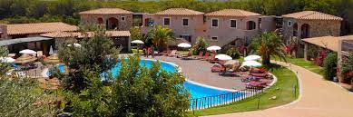
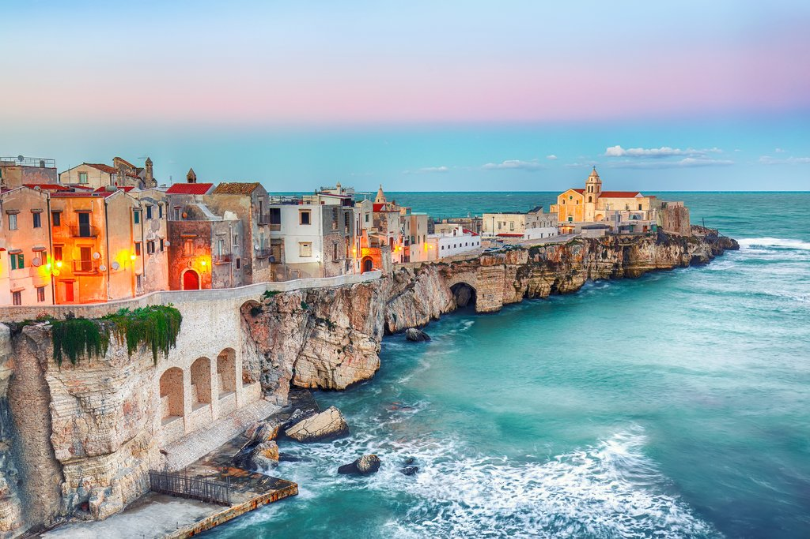
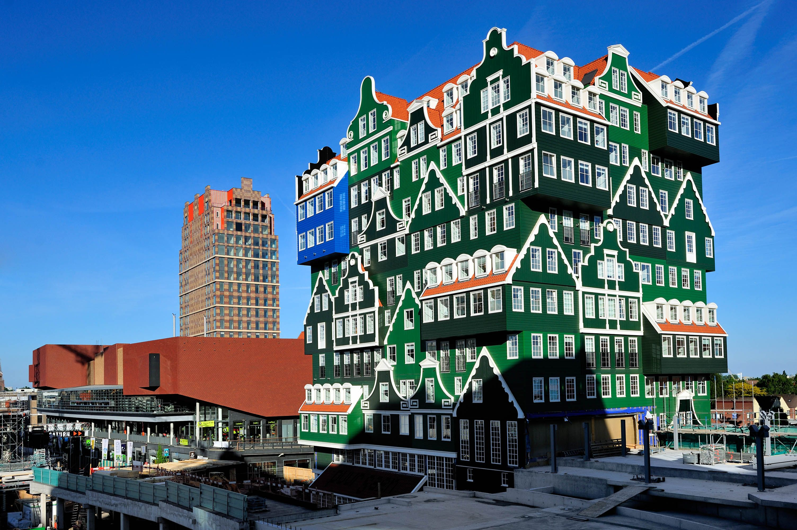

Estate in Sardegna da 11 € a notte!.

Vi portiamo questa estate nella rinomata zona del Golfo di Orosei, uno dei luoghi più suggestivi del Mediterraneo, dove abbiamo trovato un'ottima struttura, poco distante dalla spiaggia e che dispone di una bellissima piscina. Disponibilità per tutta l'estate, con ottime tariffe anche per la settimana di Ferragosto, affrettatevi a prenotare e approfittate di questi prezzi.
Puglia ad un prezzo stracciato! Bellissimo villaggio sul mare a Peschici.

Una settimana al mare in Puglia da soli 39 € a persona. Vi portiamo nella rinomata Peschici, dove abbiamo trovato un bellissimo camping sul mare, con piscine e nel quale alloggerete in comode case mobili con bagno privato. La struttura è disponibile in tante date sino a partire da metà agosto.
Soggiorno ad Amsterdam in hotel a 4 stelle con un favoloso design!

Viaggiatori pronti a trovarvi nel cuore di Amsterdam in un eccentrico hotel 4 stelle, l'Inntel Hotels Amsterdam Zaandam. Dispone di un centro benessere con piscina e palestra ed è situato nel quartiere di Zandaamm, vicino alla stazione ferroviaria, da cui partono i collegamenti diretti frequenti che in 12 minuti di treno vi condurranno alla stazione di Amsterdam.